Xinqiang Yu
于新强
Now, I am a jointly trained PhD candidate, supervised by Prof. He Wang (Peking University, Galbot) and Prof. Zhaoxiang Zhang (Institute of Automation, Chinese Academy of Sciences). I am also honored to have received guidance from Prof. Li Yi (Tsinghua University, Galbot).
Before that, I obtained my B.S. in Software Engineering from Liaoning Technical University , supervised by Prof. Haicheng Qu . I received my master’s degree from the Institute of Computing Technology, Chinese Academy of Sciences , supervised by Prof. Chuanguang Yang , Prof. Zhulin An and Prof. Yongjun Xu.
My research focuses on Dexterous Manipulation (VLM, WAM and Tactile-Driven), 3D Computer Vision and Multimodal Large Language Models.
Publications
*: equal contribution; †: corresponding author(s)
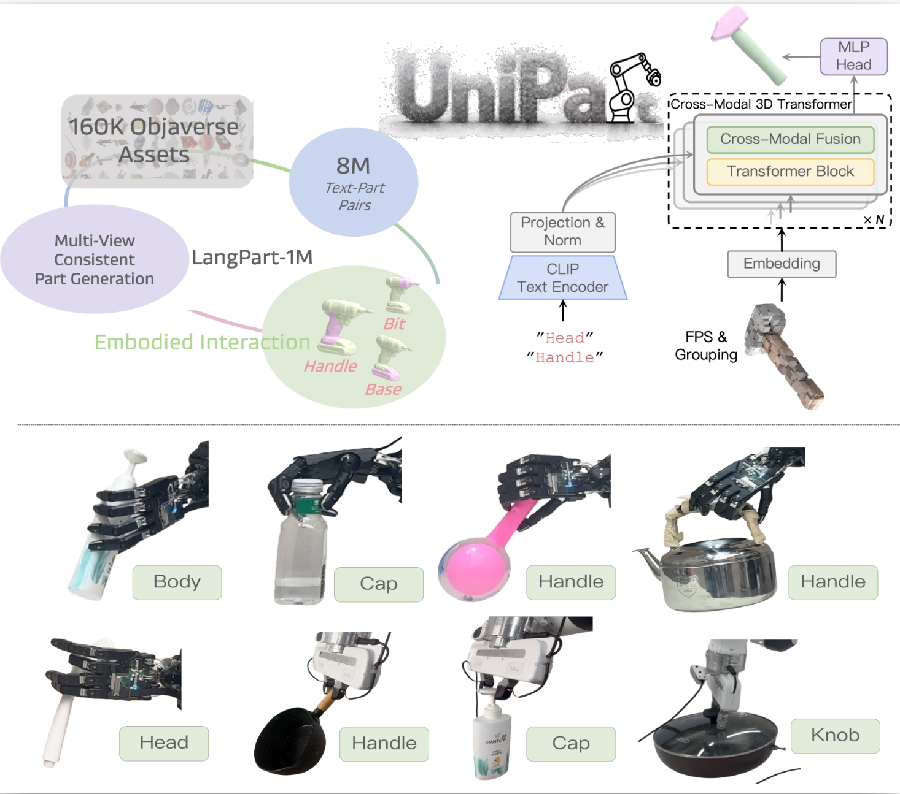
UniPart: Towards Zero-shot Language-Grounded 3D Part Segmentation for Embodied Interaction
Xinqiang Yu *, Zekun Qi*, Jiawei He, Wenyao Zhang, Xuchuan Chen, Guocai Yao, Li Yi, Zhaoxiang Zhang, He Wang
ECCV 2026
project page
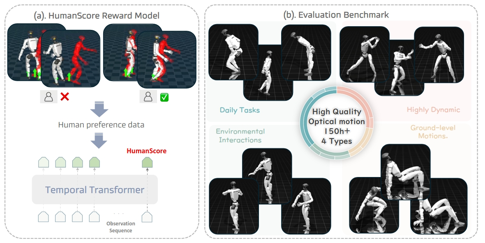
HumanTracker: Towards Comprehensive and Human-Aligned Motion Tracking Benchmark
Dairu Liu*, Zekun Qi*, Jiayu Zeng, Yu Guan, Chenghuai Lin, Xuchuan Chen, Xinqiang Yu , Wenyao Zhang, He Wang, Li Yi
ECCV 2026
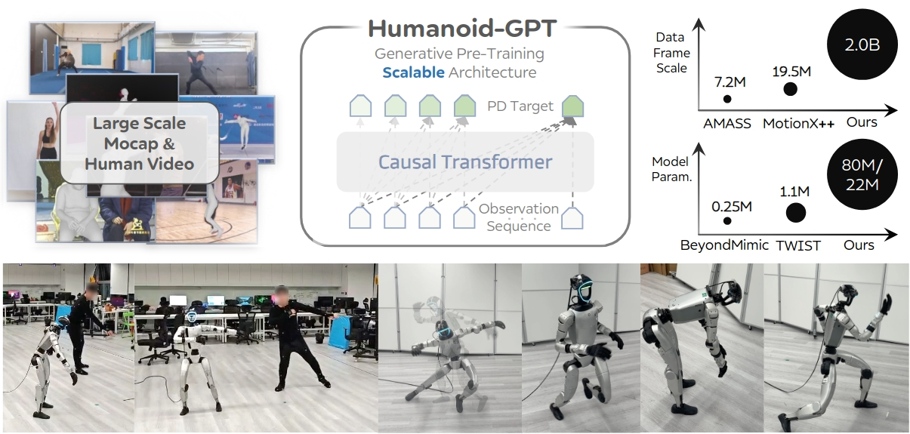
Humanoid-GPT: Scaling Data and Structure for Zero-Shot Motion Tracking
Zekun Qi*, Xuchuan Chen*, Jilong Wang*, Chenghuai Lin*, Yunrui Lian, Wenyao Zhang, Xinqiang Yu , He Wang, Li Yi
CVPR 2026
paper
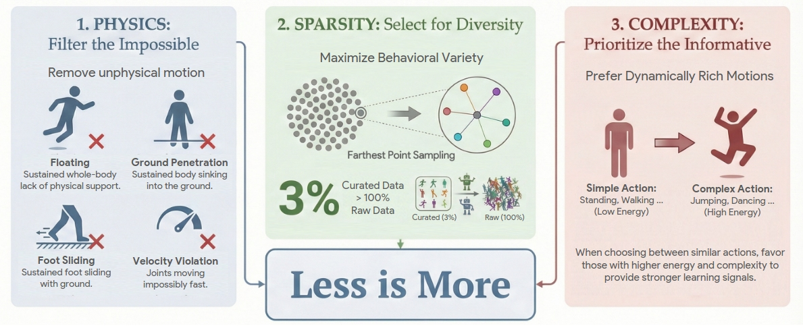
LIMMT: Less Is More for Motion Tracking
Yu Guan*, Zekun Qi*, Chenghuai Lin*, Xuchuan Chen*, Dairu Liu*, Wenyao Zhang, Jilong Wang, Xinqiang Yu , He Wang, Li Yi
ICML 2026
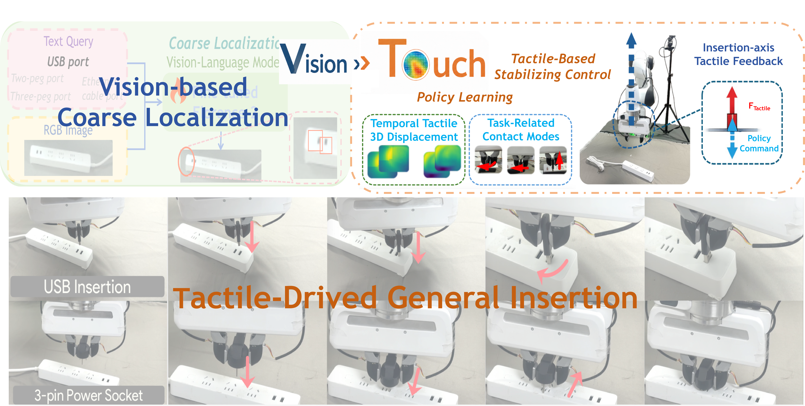
Vision to Touch: Generalizable Insertion via Real-World Tactile Reinforcement Learning
Xinqiang Yu , Yuxuan Wan, Zekun Qi, Weiheng Liu, Wenyao Zhang, Bowen Xiao, Yu Guan, Xuchuan Chen, Zhizheng Zhang, Li Yi, Zhaoxiang Zhang, He Wang
Under review
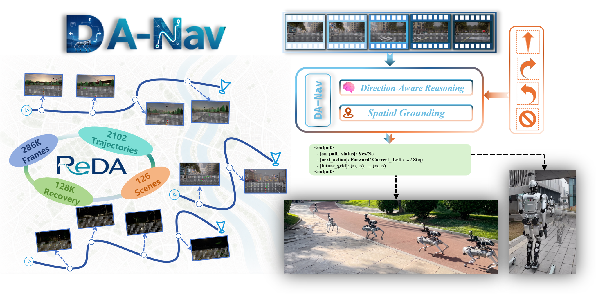
DA-Nav: Direction-Aware City-Scale Vision-Language Navigation
Ye Yuan*, Kehan Chen*, Xinqiang Yu *, Jiawei He, Yan Huang, Zhulin An
Under review
paper
DreamVLA: Dream Comprehensive World Knowledge for Vision-Language-Action Model
Wenyao Zhang*, Hongsi Liu*, Zekun Qi*, Yunnan Wang*, Xinqiang Yu , Jiazhao Zhang, Runpei Dong, Jiawei He, Zhizheng Zhang, He Wang, Li Yi, Wenjun Zeng, Xin Jin
NeurIPS 2025
paper
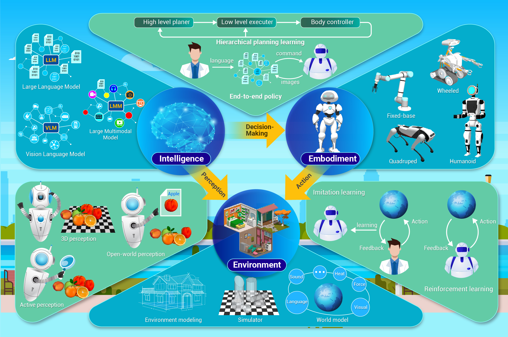
Embodied intelligence: Recent advances and future perspectives
Zhulin An, Xinqiang Yu , Chu Wang†, Yinlong Zhang, Chunhe Song†
The Innovation Informatics
paper
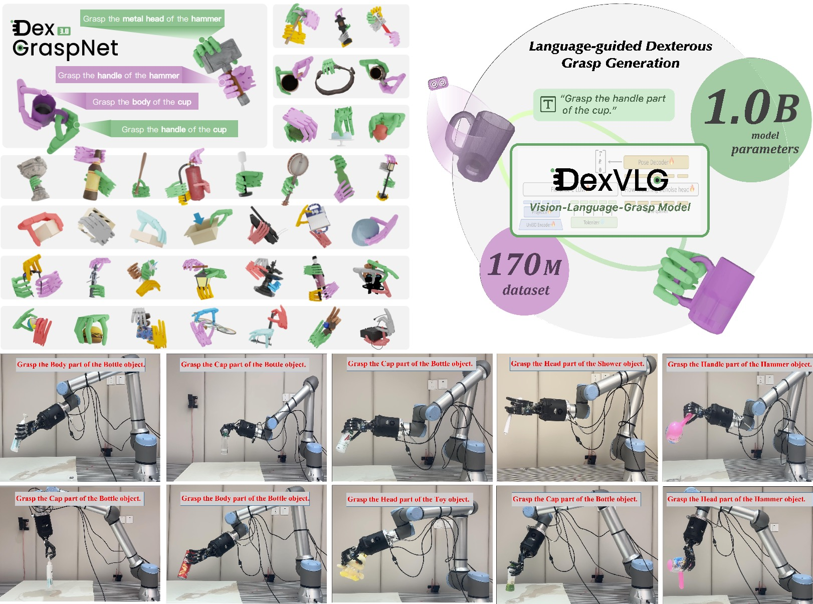
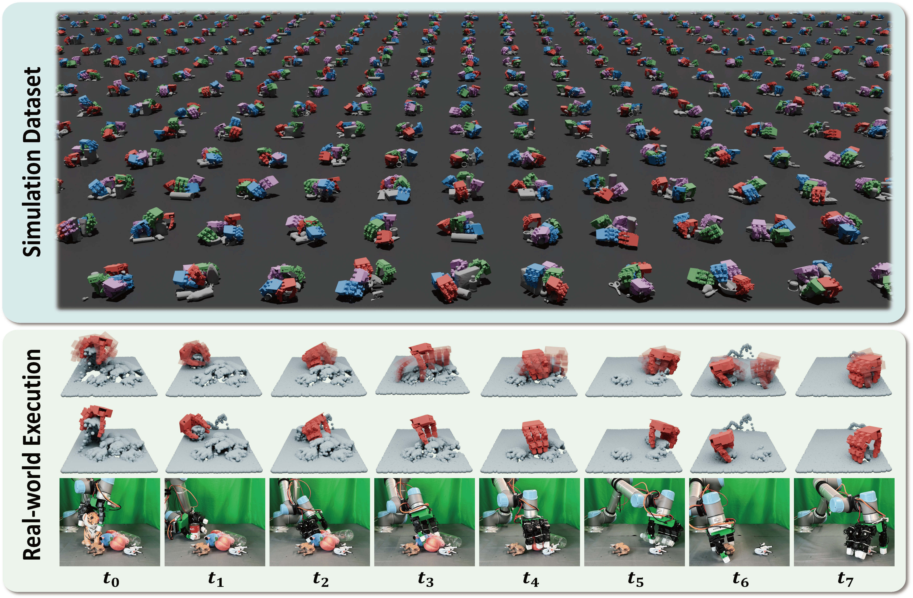
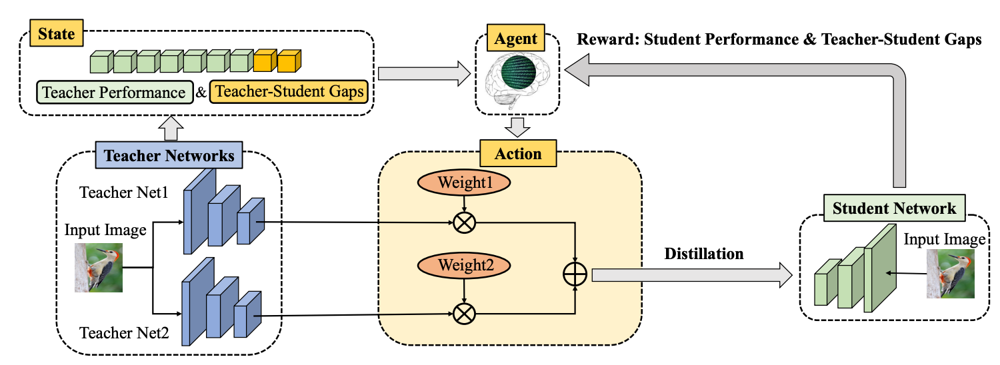
Multi-Teacher Knowledge Distillation with Reinforcement Learning for Visual Recognition
Chuanguang Yang , Xinqiang Yu , Han Yang, Zhulin An, Chengqing Yu, Libo Huang, Yongjun Xu
AAAI 2025 Oral
paper /
code
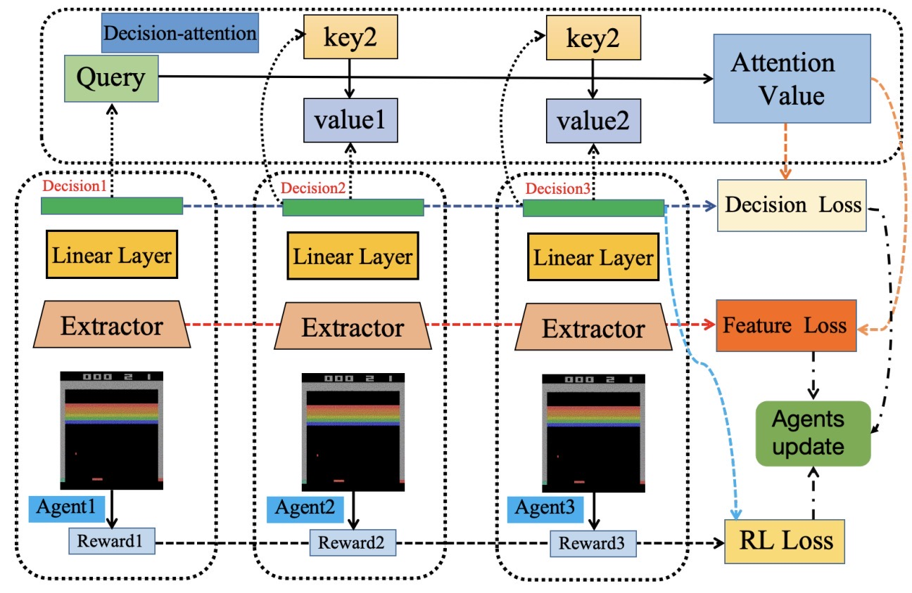
Online Policy Distillation with Decision-Attention
Xinqiang Yu , Chuanguang Yang , Chengqing Yu, Libo Huang, Zhulin An, Yongjun Xu
IJCNN 2024
paper
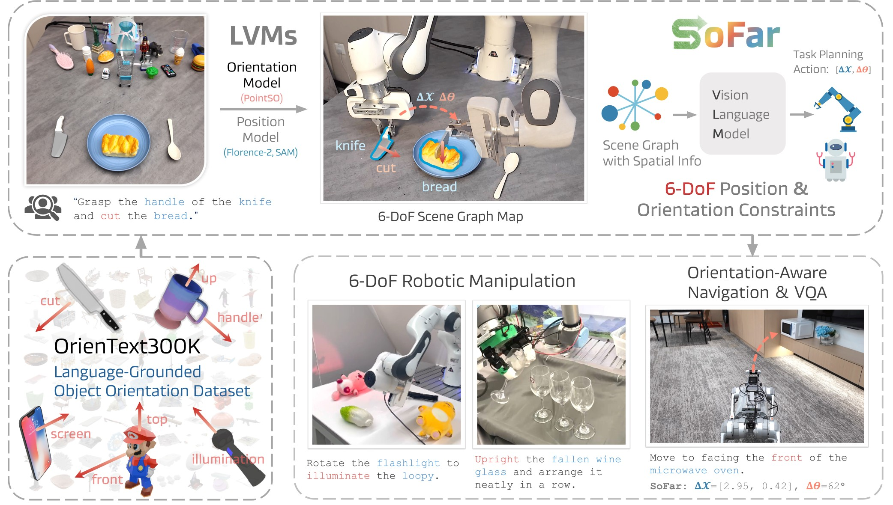
SoFar: Language-Grounded Orientation Bridges Spatial Reasoning and Object Manipulation
Zekun Qi *, Wenyao Zhang*, Yufei Ding *, Runpei Dong , Xinqiang Yu , Jingwen Li, Lingyun Xu, Baoyu Li , Xialin He , Guofan Fan , Jiazhao Zhang , Jiawei He , Jiayuan Gu, Xin Jin , Kaisheng Ma , Zhizheng Zhang , He Wang , Li Yi
Under review
project page /
arXiv /
code /
huggingface
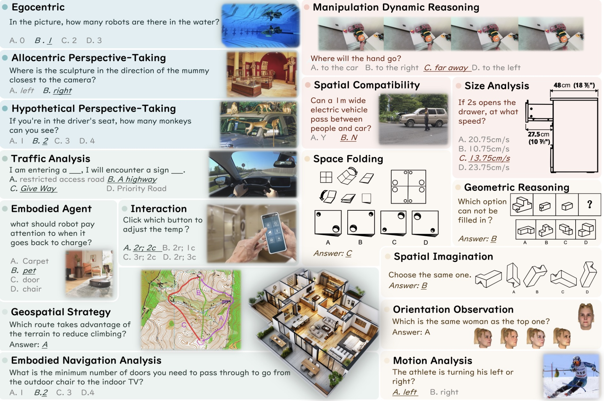
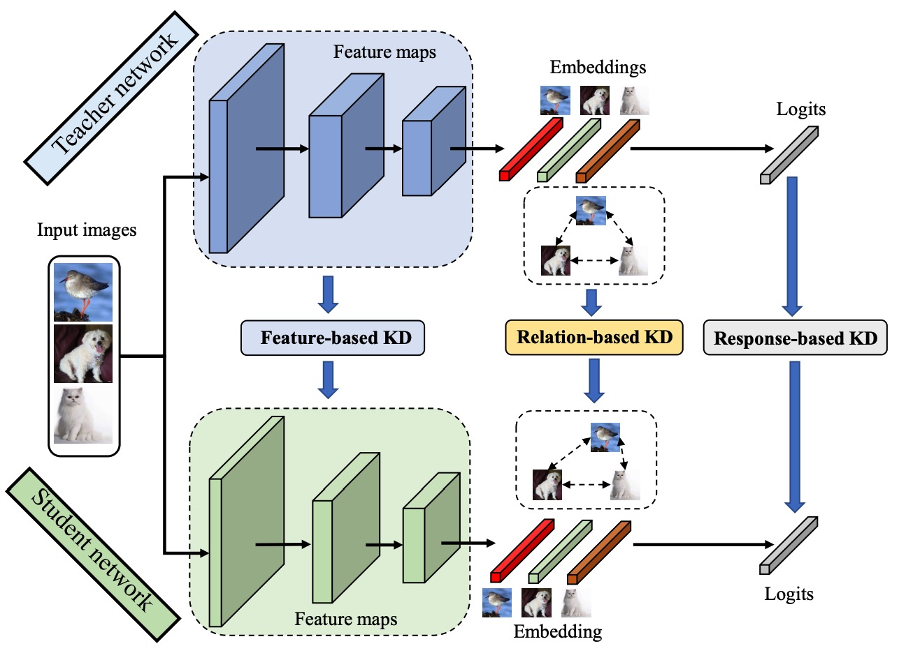
Categories of Response-Based, Feature-Based, and Relation-Based Knowledge Distillation
Chuanguang Yang , Xinqiang Yu , Zhulin An, Yongjun Xu
Springer Book Chapter Invited
arXiv /
book
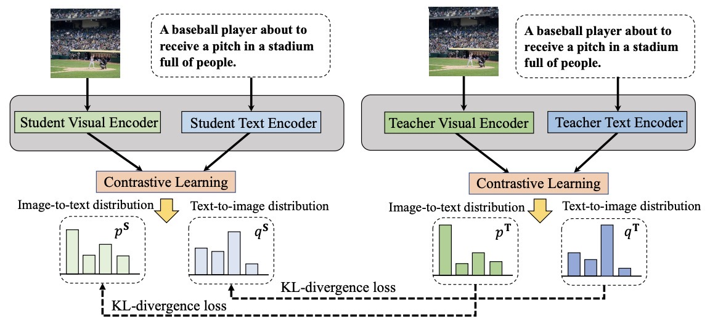
CLIP-KD: An Empirical Study of CLIP Model Distillation
Chuanguang Yang , Zhulin An, Libo Huang, Junyu Bi, Xinqiang Yu , Han Yang, Boyu Diao, Yongjun Xu
CVPR 2024
paper /
code
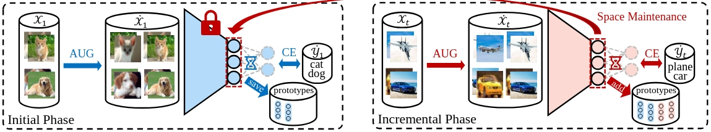
Exemplar-Free Class Incremental Learning via Incremental Representation
Libo Huang, Zhulin An, Yan Zeng, Chuanguang Yang, Xinqiang Yu , Yongjun Xu
paper
Honors and Awards
China National Scholarship
Top 0.2%
First-Class College Scholarship
University of Chinese Academy of Sciences
Visitors: -- ·
Page views: --